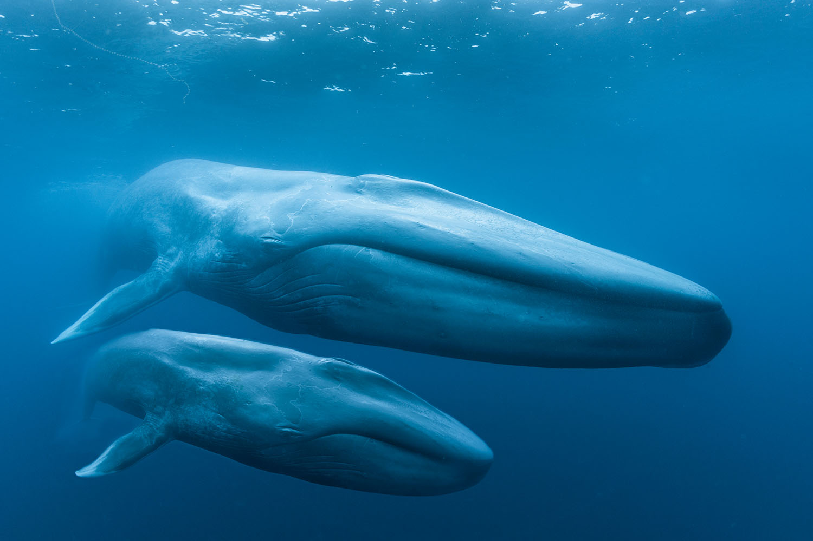
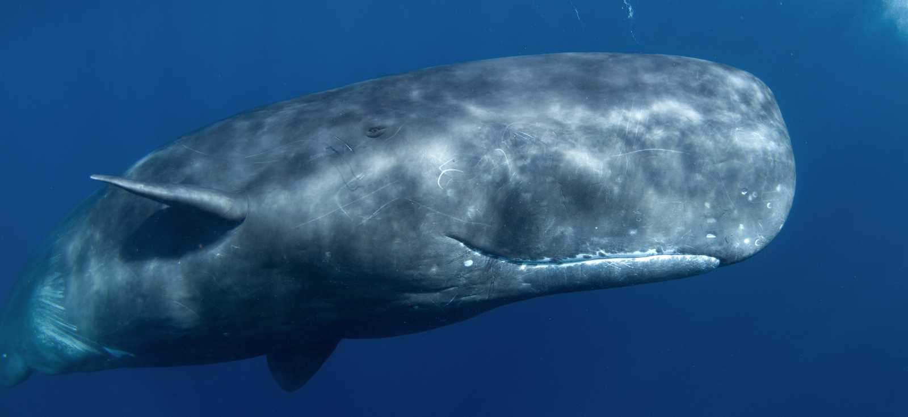

Blue Whale
The Blue Whale is THE largest animal on earth including most dinosaurs if not all, they are also considered a mammal, not a fish
- a Blue Whale can end up as around 200 tons, or between 200,000 and 300,000 pounds, between the weight of 25 and 30 adult elephants!
- Blue Whales communicate using a low frequency noise that can be heard as far as hundreds of miles
- They have hearts the size of a small car, weighing about 1,000 pounds
Colossal Squid

the Colossal squid takes it's place among the largest Creatures on the planet, bigger than the more well known giant squid! however, it is a very rare creature and has no truly well defined appearance or picture, so we can only see drawings or portions of such creature, but there are a few known elements of such being
- they have the largest eyes in the animal kingdom, said to measure about 27cm across, about the size of a sports ball!
- most instances have recorded this sea beast to be about 15 meters long, and between 1,100 and 1,500 pounds!
- the only known creature to be hunting the colossal squid is the famed Sperm Whale.
Sperm Whale
The Sperm Whale is one of the deepest-diving whales, capable of hunting colossal squids- at extreme depths.
- Sperm Whales can dive over 3,000 meters deep and hold their breath for up to 90 minutes.
- They have the largest brain of any known animal, weighing around 8 kilograms (17 pounds).
- Their powerful echolocation helps them locate prey in the pitch-black deep sea.
Whale Shark

The Whale Shark is the largest fish in the world and is nicknamed the gentle giant, due to its relatively docile nature. Despite it's massive size they only feed on small fish and plankton
- The largest recorded Whale shark was a whopping 34 tonnes, but there have been witnesses of up to 42 tonnes!
- They have over 3,000 small teeth, although they are not used to chew food
- they swim very slowly, as many of them can only go up to 5 mph maximum during their adolescence
Lion's Mane Jellyfish

The Lion's Mane jellyfish is the biggest jellyfish in the world, mainly known for the tentacles that move in such manner to resemble a lion's mane, they are even longer than a blue whale in length as it's tentacles alone can grow up to 120 feet!
- It's tentacles are numbered in the thousands, usually in groups of 8
- They feed on small fish, plankton, as well as other jellyfish
- Their sting can be painful, but does not prove lethal for most humans